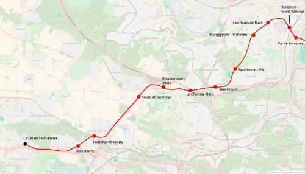
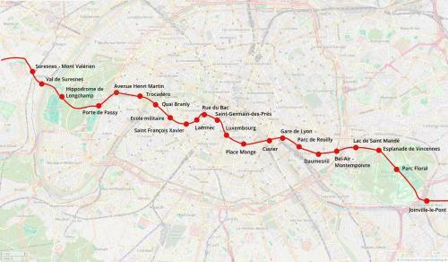
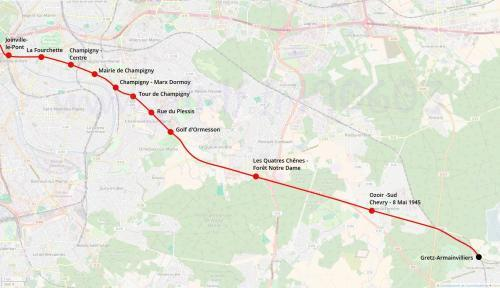

Métro Sud
Métro Sud
Gretz-Armainvilliers - Élancourt
Création de la ligne sud du métro.
La ligne métro sud est une proposition de ligne de métro pour mieux mailler le réseau existant dans le sud de Paris et desservir des zones actuellement mal desservies par les transports ferrés en banlieue.
À l'est, le but est de desservir Chennevières-sur-Marne et Ormesson tout en favorisant un report du trafic depuis la nationale 4 vers le métro. Entre Joinville-le-Pont et Gare de Lyon le métro serait une alternative au RER A. La station Cuvier permettrait de desservir le pôle universitaire de Jussieu et intéressera les étudiants arrivés à Paris par la gare de Lyon. La section gare de Lyon - Trocadéro servira à soulager les lignes 1, 8 et 9 tout en améliorant la desserte des 6e et 7e arrondissements de Paris.
La liaison Trocadéro - Le Chesnay vise à un report du trafic automobile depuis l'autoroute A13 vers le métro tout en desservant le sud de Rueil-Malmaison. La ligne métro sud offrirait également un nouvel itinéraire pour relier les Hauts-de-Seine et la ville nouvelle de Saint-Quentin-en-Yvelines en remplacement du projet de ligne 18 du métro actuellement envisagé dans le Grand Paris Express.
Les stations École militaire, Quai Branly et Trocadéro seront dimensionnées pour recevoir les foules qui se déplacent pour les évènements du Champs de Mars, en particulier le 14 juillet.
Cartes
{kind=link}

Cliquer pour agrandir
{kind=link}

Cliquer pour agrandir
{kind=link}

Cliquer pour agrandir
Stations
Si ce projet vous intéresse n'hésitez pas à le (re-)partagez sur les réseaux sociaux ou par courriel ou à en parler autour de vous.
Si vous souhaitez travailler à la concrétisation de ce projet, passez à l'action et contactez nous.
Commenter